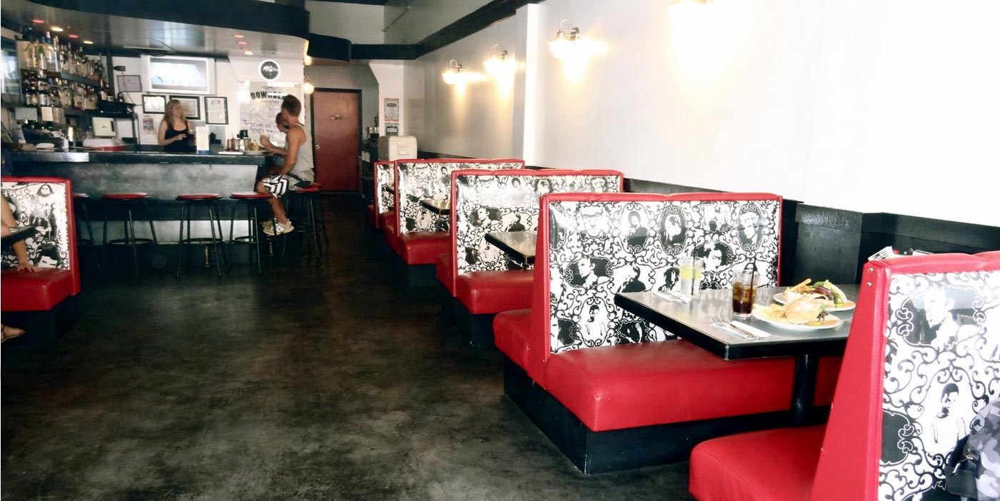

Downbeat Diner & Lounge Website
This local Vegan/Vegitarian all night diner wanted a website as impressive as their menu. Fun, upbeat design that matches the ambiance of the actual resturant.
- Web Design
- Web Development
- Photography

Made to order
When the Downbeat Diner & Lounge asked me to re-design there site, I wanted to make sure it represented there brand. The resturant is simple, minimalistic and punk rock. So too shall be the website be. It matches the decor and ambiance of the resturant and offers the user no more han what they need from a resturant website. Built responsive on the 1140 grid it allows users to check the menu from anywhere.
